Mit arbejde
På denne side er det muligt, at se noget af det, som jeg har lavet
Evaluering og re-design af EALs hjemmeside
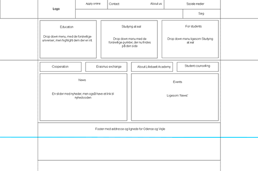 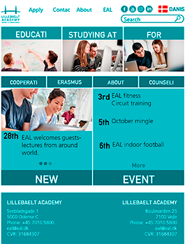 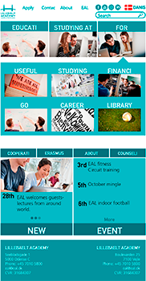 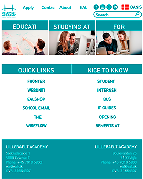 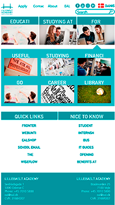 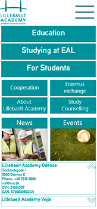 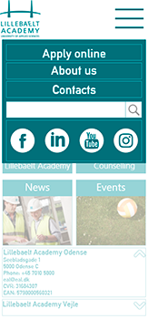 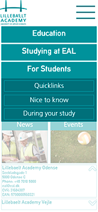Det første projekt på første semester, var at vi i grupper, skulle lave en evaluering og re-design af Erhvervsakademiet Lillebælts hjemmeside.
>br>Min gruppe fik til opgave at evaluere og re-designe den internationale del af EALs hjemmeside. Resultatet kan man se ovenover.
Ud fra vores evaluering af hjemmesiden, blev der først lavet et wireframe. Siden blev der lavet en prototype af hjemmesiden i Adobe XD, både til web og mobil.
Installationskoncept for Fredericia-voldene
 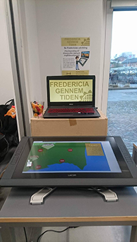
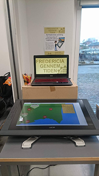

Første semesters andet projekt, var et samarbejde med Fredericias Kommune og Fredericia-museerne, hvor vi skulle udvikle
et innovativt og interaktivt installationskoncept, der var målrettet besøgende på Fredericia-voldene.
Installationskonceptet, som vi udarbejde, er et interaktivt kort over Fredericia, der skifter udsende efter hvor man placerer en brik på kortet,
således at man ser områdets udvikling, samtidigt med at historien bliver fortalt gennem animationer på en skærm ovenover kortet. Ovenover får man et indblik i vores prototype.
Kort film
I faget Visualisering skulle vi lave en kort film, med temaet "sort", så vi kunne lære at optag, redigere og lignende.
Verden vælter
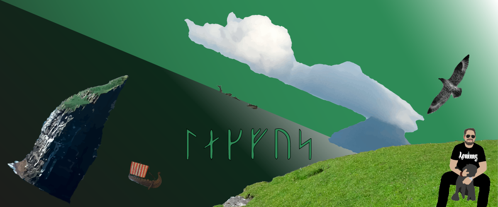
Hjemmesidens baggrundsbillede. Jeg begyndte at lave det, fordi jeg skulle have et billede til hjemmesiden, men det blev lidt mere, end kun det.
Dets udseende forandredes mange gange, og farverne er også skiftet ud et par gange gennem processen.
Billedet er lavet af en konstellation af flere fotos, som jeg har taget og siden redigeret i Adobe Illustrator.
På billedet er jeg, det er et selvportræt, jeg har tegnet efter et foto. Storkjoven. Lítla Dímum, den toblerone formede ø, som var min køkkenudsigt gennem hele min barndom.
Ásmundarstakkur, klippen ude i havet, ligger på den anden side af Sandvík. Vikingeskibet og Lagfoss i yngre futhark runer, hører til min baggrund. Til sidst, men ikke mindst, en flok grindehvaler i horisonten.
Farverne er også specielle, det grønne kan virke meget mærkeligt. Men på Færøerne, er det symbol på liv, forår, lysere tider, efter er kraftig storm kan havet godt være grønt. Der vokser ikke så planter der oppe, men græs gør.
Det hele vælter, mens jeg bare sidder ved fjeldskrænten.
Ting jeg har lavet for Føroyingafelagið á Fyn(Den Færøske Forening på Fyn)
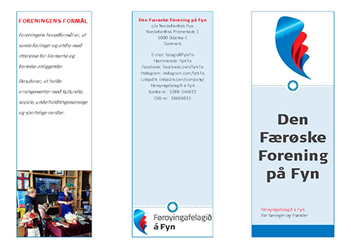 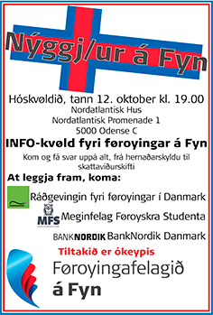 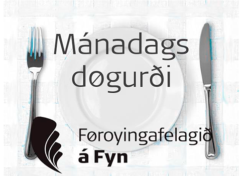